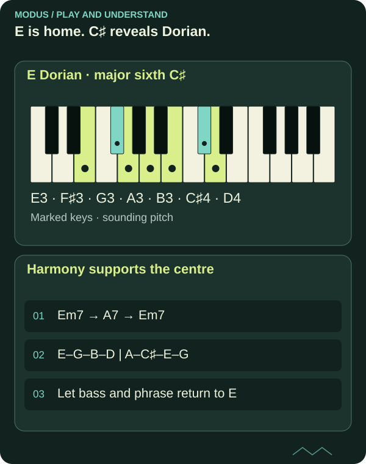

Modes: the centre matters more than the starting note
Starting a major scale on a new note shows how the modes are related. To hear a modal sound, that new note also needs to feel like the centre.

A centre gives notes their roles
E Dorian uses E, F♯, G, A, B, C♯ and D, the same notes as D major. Yet the music can feel different when E is the root and the harmony supports E as the centre.
If you simply play these notes from E to E over a clear D major cadence, your ear may still hear D as home. The first note of a scale exercise does not necessarily override the harmony.

Read the diagram as text
- E Dorian · major sixth C♯: E3 → F♯3 → G3 → A3 → B3 → C♯4 → D4
- Harmony supports the centre: Em7 → A7 → Em7; E–G–B–D | A–C♯–E–G; Let bass and phrase return to E
Compare from the same root
Parallel comparison makes colours easier to hear. Compare E Dorian with E Aeolian rather than moving the root at the same time as changing mode.
| Sound | Formula | Sixth degree above E |
|---|---|---|
| E Dorian | 1–2–♭3–4–5–6–♭7 | C♯ |
| E Aeolian | 1–2–♭3–4–5–♭6–♭7 | C |
Both have a minor character because they have a minor third. Dorian has a major sixth; Aeolian has a minor sixth. That one degree can affect both melody and chord choices.
Let harmony reveal the colour
A vamp between Em7 and A7 can highlight E Dorian. A7 contains C♯, the major sixth above E. Let Em7 feel like home and use A7 as a contrast.
You do not need to emphasise the characteristic note all the time. Try using it as a deliberate colour in an otherwise simple phrase. Modality concerns how music is organised, not how often you hit a particular degree.
One fretboard pattern can contain several centres
The notes of G major also occur in E Aeolian, A Dorian and B Phrygian. This is a relative relationship: the note collection stays the same, while the centre and interval relationships change. It does not mean a phrase automatically changes mode whenever it starts on a new note.
Play the familiar notes over an E drone and then an A drone. Try ending on E and A respectively, and hear how the other notes take on new roles. A fretboard pattern describes positions; the music determines which centre is established.
FROM READING TO PLAYING
Try it yourself.
Keep E as the centre. Play a short phrase with C♯, then the same phrase with C. Compare both without accompaniment and over an E drone.
Start the Dorian learning pathCHECK YOUR UNDERSTANDING
What do you remember?
Three questions about what you have read. Get all three right to complete the quiz. Try as many times as you like.
Completion is saved in this browser and shared between Norwegian and English.
You answered all three questions correctly. Take the idea to your instrument.
Back to the article library ↗︎